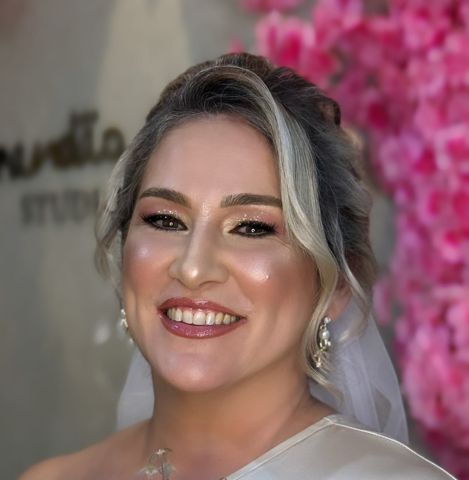
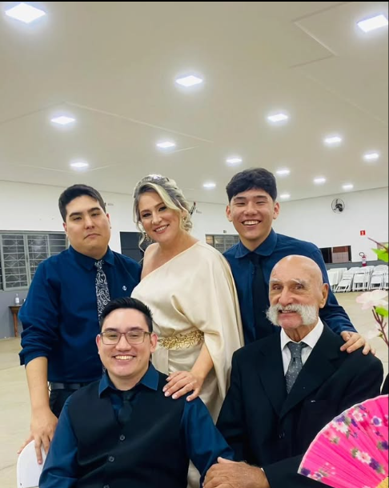
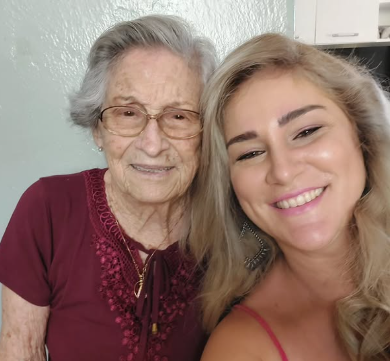
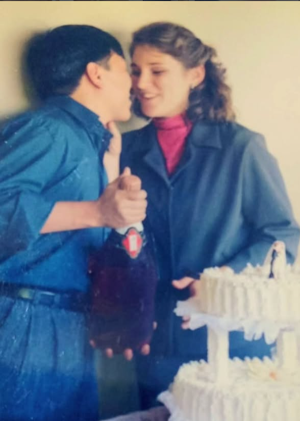
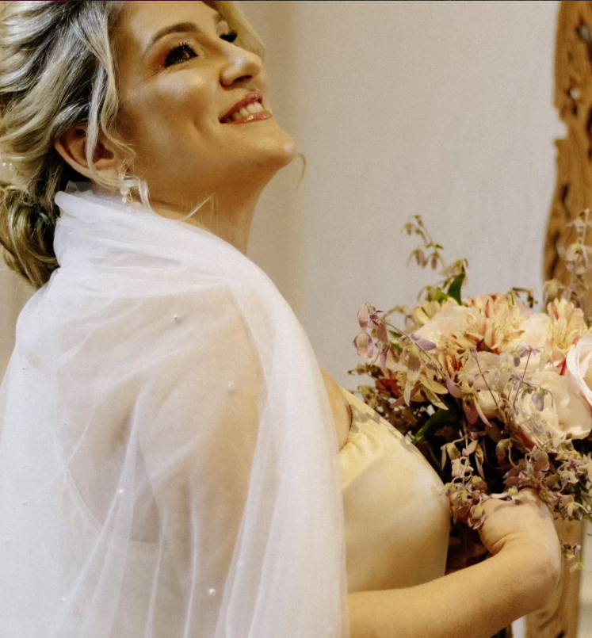

Feito com carinho
Para a melhor mãe do mundo
Cada foto aqui carrega um pedaço de uma história que a gente ama contar: a nossa, com você no centro dela.

Nossos momentos




A admiração de seu filho
Obrigado por cada gesto que fez parecer pequeno, mas que carregava um mundo inteiro de cuidado. Você ensinou sem cobrar, cuidou sem pedir nada em troca e transformou dias comuns em lembranças que a gente guarda para sempre. Essa página é só um pedacinho de tudo o que sinto por você.
Com amor, seu filho.